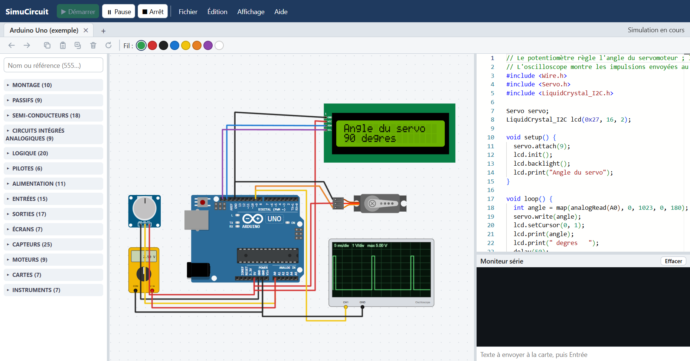
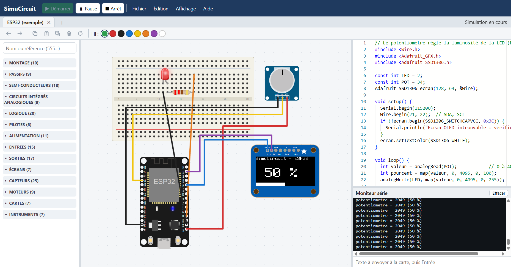
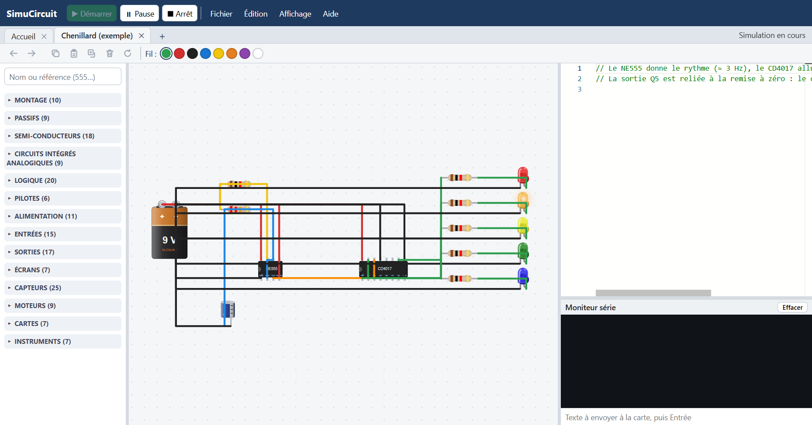

Ce que fait le logiciel
- Le vrai programme tourne : ton code est compilé puis exécuté sur une carte émulée — Arduino Uno, Nano, Pro Mini, ATmega328P, ESP32, ESP32-S3, Raspberry Pi Pico (C++ et MicroPython).
- 170 composants : LED, afficheurs, moteurs, capteurs, circuits logiques 74HC et CD4000, NE555, amplificateurs opérationnels, relais, piles…
- Simulation électrique : tensions, courants, condensateurs, transistors, régulateurs.
- Alertes réalistes : LED sans résistance qui grille, broche surchargée, court-circuit, circuit non alimenté.
- Instruments : multimètre, oscilloscope, analyseur logique, générateur de fonctions, alimentation réglable.
- Liste d'achat des composants du montage, exemples prêts à lancer.
Ce qu'il ne fait pas
- Le WiFi et le Bluetooth de l'ESP32.
- Le bus SPI (écrans TFT, cartes SD).
- L'Arduino Mega, l'ESP32-C3, l'ATtiny85.
- L'électronique rapide : au-delà de quelques centaines de hertz, les signaux analogiques sont approximatifs.
- Les modèles sont simplifiés : justes pour comprendre et vérifier un montage, pas pour dimensionner un circuit de précision.
Configuration requise
- Windows 10 ou 11, 64 bits
- Environ 4 Go d'espace disque
- Aucune connexion internet après l'installation
Dernière version : voir la page des versions
Installer
- Demande le mot de passe à l'auteur. Le téléchargement est une archive chiffrée : sans mot de passe, elle ne s'ouvre pas.
- Télécharge l'archive (bouton en haut de la page), puis ouvre-la avec 7-Zip (gratuit) : clic droit → 7-Zip → Extraire.
- Lance
SimuCircuit-Installation. Windows peut afficher « Windows a protégé votre ordinateur » (SmartScreen), parce que le programme n'est pas signé : clique sur Informations complémentaires, puis Exécuter quand même. - Garde le dossier proposé,
C:\SimuCircuit. Ailleurs, la compilation ESP32 peut échouer à cause de chemins trop longs. - L'installation dure environ 10 minutes (des dizaines de milliers de petits fichiers : compilateurs et émulateur).
Tu as une version antérieure à la 1.3.0 ? Installe une fois la version complète : la 1.3.0 est la première qui sait se mettre à jour toute seule.
Mettre à jour
Depuis le logiciel (recommandé)
Au démarrage, SimuCircuit signale une nouvelle version. Clique sur Mettre à jour, saisis le mot de passe (une seule fois si tu coches « Se souvenir ») : il télécharge, installe et redémarre. Aussi dans le menu Aide → Rechercher une mise à jour.
À la main
Télécharge l'archive de mise à jour (lien en haut de la page), ouvre-la avec 7-Zip et le mot de passe, ferme SimuCircuit, puis double-clique sur Installer la mise à jour.bat. Rien n'est désinstallé.
Licences et code source
SimuCircuit s'appuie sur des logiciels libres : Electron, avr8js, rp2040js, wokwi-elements, Monaco Editor, arduino-cli, les compilateurs et cores Arduino, ESP32 et RP2040, MicroPython, 7-Zip, et une version modifiée du QEMU d'Espressif. La liste complète, avec versions, licences et liens vers les sources officielles, est dans le dossier LICENCES de l'installation et de chaque archive (LISEZMOI-LICENCES.txt).
Le code source complet du QEMU modifié (GPL v2), avec les modifications et le script de compilation, est publié sans mot de passe : sources-qemu-esp32-simucircuit.7z. Pour les autres composants sous GPL ou LGPL, redistribués sans modification, les sources sont aux adresses officielles indiquées, et une copie peut être demandée à l'auteur pendant trois ans (ouvrir une demande).